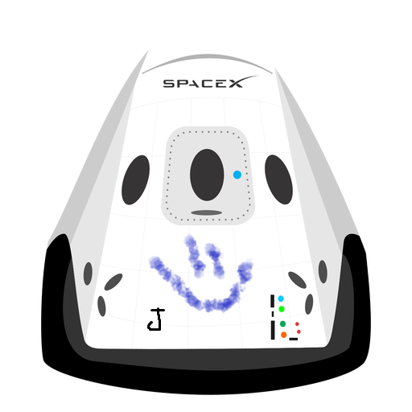

Hyperblog
Tu blog maestro
Este es el título atractivo e interesante del post
Y este es el párrafo de inicio donde vamos a explicar las cosas increíbles que se pueden hacer con ramas

Los blogs son la mejor forma de compartir información y tus ideas. Mucho más que ir a conferencias o salir en youtube. Excepto si eres un rockstar. Pero estadísticamente no lo eres.... por ahora
Suscríbete y dale like